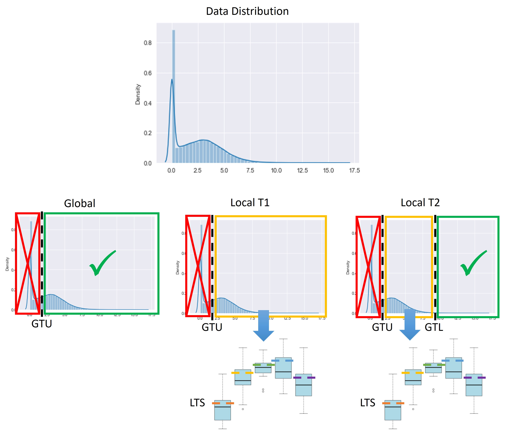

Gene-level thresholding tutorial
When using a threshold integration strategy, the threshold is only applied to the score that was attributed to the reactions from the omics data. However, other strategies were introduced that use thresholds to access which genes are active before the integration process. In troppo such methods can be used through the `GeneLevelThresholding`class.
This class is used to transform the dataframe containing the omics data and perform gene-level thresholding on omics data. It currently supports Global and Local thresholding approaches described by Richelle, Joshi and Lewis (2019) (https://doi.org/10.1371/journal.pcbi.1007185). These include:
global: genes with a value lower than the upper global threshold (GTU) are considered inactive; genes with a value greater than the lower global threshold (GTL) are considered active.
local t1: genes with a value lower than the upper global threshold (GTU) are considered inactive; for genes with a value greater than the GTU, if the value is lower than the local threshold (LT), the gene is considered inactive, otherwise it is considered active.
local t2: genes with a value lower than the upper global threshold (GTU) are considered inactive; genes with a value greater than the lower global threshold (GTU) are considered active; for genes with a value between the GTU and the lower global threshold (GTL), they are only considered active if their value is greater than the local threshold (LT).
An example of how these thresholds are applied is provided bellow.
Thresholds are selected in accordance with the distribution of the data. The numbers in the thresholding options represent the position of the value to use. Currently, the options are: [0.1, 0.25, 0.5, 0.75, 0.9]; the threshold value will then be the value on the dataset that corresponds to that quantile.
To instantiate the GeneLevelThresholding class the following parameters are required:
omics_dataframe: Omics data to be processed in a pandas dataframe format.
thresholding_strat: String containing the thresholding strategy to be used. Must be one of: global, local t1, local t2.
global_threshold_lower: Position of the Global Lower threshold value on the quantile list.
global_threshold_upper: Position of the Global Upper threshold value on the quantile list.
local_threshold: Position of the Local threshold value on the quantile list.
To apply the transformation to the data the apply_thresholding_filter method must be called.
Imports and Setup
import pandas as pd
from troppo.omics import GeneLevelThresholding
Read Omics Data
omics_data = pd.read_csv(filepath_or_buffer='data/Desai-GTEx_ensembl.csv', index_col=0)
Apply Gene-level Thresholding
threshold = GeneLevelThresholding(omics_dataframe=omics_data,
thresholding_strat='local t2',
global_threshold_lower=1,
global_threshold_upper=3,
local_threshold=2)
new_omics_data = threshold.apply_thresholding_filter()